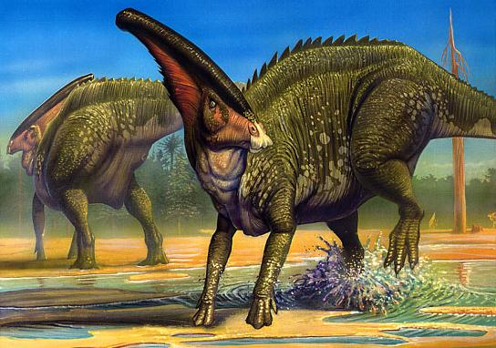
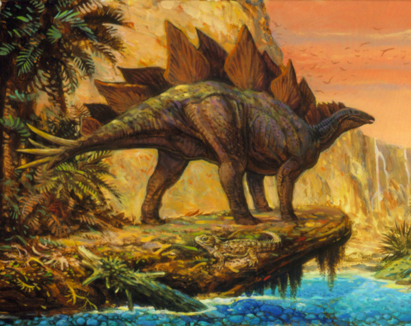
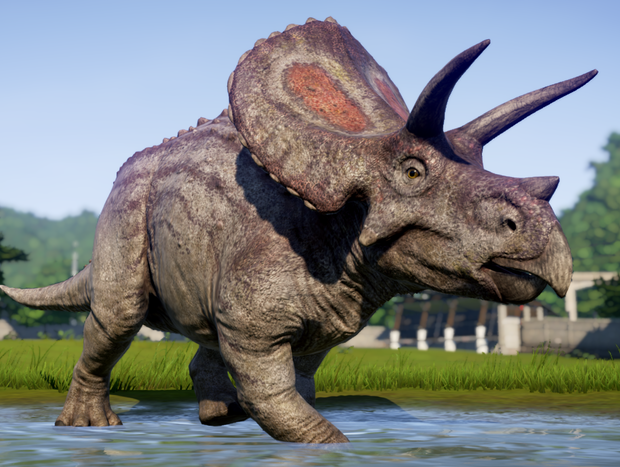

Length: 10m Diet: Herbivorous Found in: China Lived: Late Maastrichtian of the Cretaceous, 72-66 million years ago
The partial skull resembles that of Parasaurolophus from North America. This does not suggest a Bering land bridge existed during the Cretaceous period, since at that time North America was far away from Eastern Asia. Instead, it is likely that this group of hadrosaurs all had a similar long, backward-projecting hollow crest. It may have been used for trumpeting their calls. In other words, their skull shape was a basal feature.
Length: 9m Diet: Herbivorous Found in: USA Lived: Late Jurassic, 155-145 million years ago
Scientists are not exactly sure what the plates were used for. They may have warned off predators, or allowed members of the same species to recognise each other. Another suggestion is that the plates were used to regulate body temperature. There are tiny grooves in the plate surfaces, possibly where blood vessels would have been. The amount of blood passing through these vessels would determine the amount of heat transfer.
Length: 9m Diet: Herbivorous Found in: USA Lived: Late Cretaceous, 68-66 million years ago
With its 3 horns, a parrot-like beak and a large frill that could reach nearly 1 metre across, the Triceratops skull is one of the largest and most striking of any land animal. The horns could have been used to fend off attacks from Tyrannosaurus. A partial Triceratops fossil collected in 1997 has a horn that was bitten off, with bite marks that match Tyrannosaurus. The fossil shows that the horn healed after being bitten, so at least some Triceratops survived these encounters. Puncture marks on fossil frills show that male Triceratops also used their horns to fight each other, probably to impress females.
